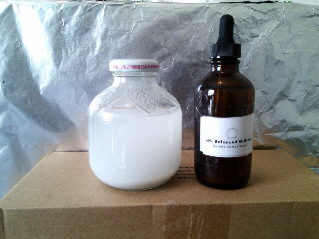

FIRTH ETHER
Fire, Earth, or Either
1 - Serene Ormus Blend

The focus of the Serene Blend is to aid one in relaxation and balance of the Body Complex. This blend has a slightly darker hue because it contains Ormus made with a little more black Cyprus Sea salt. This a good entry point for those that have not recently done a body detox and/or do not have much experience with meditation.
Balances of the body
Upon balancing the body one is in a better position to balance the stress the Mind Complex. It is not that, you do not want to increase sensitivity. The idea is that you want to be able to increase AND decrease sensivity expanding and relaxing your awareness throughout your consciousness. The Serene Blend works to detox as well as crystalize the Body Complex with the focus of using the blanced physical body as the base relaxed meditated state.
Detox of the body
 The detox works similar to the way the slighty alkaline substance baking soda works blance the pH of acidic substances used in many artificial ingrediants used in foods. There's even acidic bottled water...YUCK! The main difference is that the baking soda does it through carbonation, the Ormus (while birthed using a pH spike carbonation process) does it through energetic crystallization that comes along with superconducting properties (frictionless electrical resistance). So not only does it work to counteract the nutrient blocking toxic effects of acidic ingredient subtances below a pH of 7, but the ability of Body Complex systems (nervous system especially) to communicate with is drastically increased due to the superconducting effects of Ormus.
The detox works similar to the way the slighty alkaline substance baking soda works blance the pH of acidic substances used in many artificial ingrediants used in foods. There's even acidic bottled water...YUCK! The main difference is that the baking soda does it through carbonation, the Ormus (while birthed using a pH spike carbonation process) does it through energetic crystallization that comes along with superconducting properties (frictionless electrical resistance). So not only does it work to counteract the nutrient blocking toxic effects of acidic ingredient subtances below a pH of 7, but the ability of Body Complex systems (nervous system especially) to communicate with is drastically increased due to the superconducting effects of Ormus.
Bahavior of a balanced body
From a more balanced point the body is able to heal itself like it should have beening along when one is not riddled with nutrient blocking toxins. With the Body Complex communicating properly it becomes more able to fend off free redicals like germs that our bodies encounter every day and one is more comfortable in their own skin.
Body-Mind relation
The idea here is that meditation now becomes much more effective at helping one find and really pinpoint their base relaxed state. This is easier said than done, especially for extended periods. This isn't because its hard to attain a relaxed state. If there is something in your life right now that you really love or really love doing then that help you relax. But then again this is where the difficulty lies, as humans we are more than just our relaxed base because there are some things that we love that exalt or elate us making our heart race from simply thinking about it. The problem is when the balance between between relaxed and expanded gets thrown off.
As the Body Complex achieves balance it is as if a path is paved for the Mind Complex to smoothly expand its awareness throughout its consciousness beyond the physical body without friction.
1 - Serene Ormus Blend (4 fl oz): $35.11 (shipping inlcuded)
|  |
| Serene Ormus Blend (4 fl oz) $35.11 |
All Ormus birthed through me was brought through using only natural ingredients from the Earth:
pH 7+ Spring Water
Alkaline Sea Salts near the 7+ Earth Chakras and Vortexes
Prayer
Non-polar Pyramid Energy